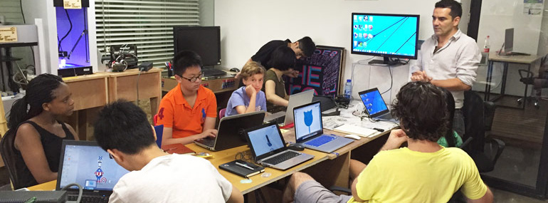

JOIN US

Xinfab is an independent organization managed as non-profit.
Our community is able to exist thanks to donations, sponsors and the effort of our members who help organize and grow our space into the amazing maker community it is today. Therefore we can always use help of enthusiastic volunteers and staff.
At the moment we are looking for:
Volunteer
- People who can help in any way to maintain and develop our space/community are always welcome
Internship
- Communication, Community management, Social Media
Staff
- Lab manager (full-time): download job descrption here
Application deadline: 31 January 2018
All positions can be full-time, part time or even on voluntary basis.
If you are interested please send us an email at info@xinfab.com